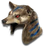

Heyday

Stone Hide
Dream Spirit
Defense: 109-159
Required Level: 91
+300-350% Enhanced Defense
100% chance to cast level 1 Mark of the Bear on striking
+15-25% Increased Maximum Life
+15-25% Faster Hit Recovery
+2-4 to Shock Wave (class only)
+2 to Druid Skill Levels
+10% Magic Resistance
Requirements Increased By 150%
Reduces curse duration by 20%
Unique Druid Pelt
Stone Hide
- Type
- Druid Pelt
- Base
- Dream Spirit
- Tier
- Elite
- Required level
- 91
- Item level
- 85
- Required strength
- 118
- Max sockets
- 4
- Class
- Druid only